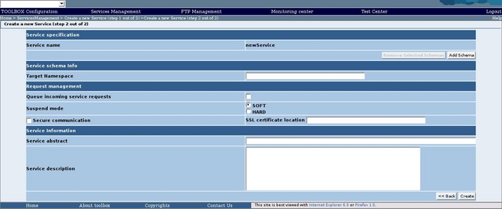

Setting up an HTTP secure communication
The TOOLBOX environment can be configured to support a secure communication both on the server (synchronous and asynchronous operations) as well as on the client side (asynchronous operations).
The TOOLBOX SSL Server functionality has been provided via Tomcat (Apache is not used to provide SSL on the server side).
Certificates building
To use SSL, it is necessary to generate a Certificate for the client (synchronous) and the server (synchronous/asynchronous). These Certificates are then imported into a keystore, to which the client and server connect. The keystore acts as a database for security certificates.
To generate a certificate the keytool utility in the JDK is used (see Sun's documentation for more information on this tool).
Generate a Server Key and Certificate
You have to perform this step if you want to use SSL on the Server side.
Launch the keytool from a shell (or command prompt) to generate your public and private key.
Note that the Certificate and keystore files will be generated in the directory you run keytool from.
Use keytool as follows:
keytool -genkey -alias tomcat-sv -dname "CN=[Common Name],OU=[Organisation Unit], O=[Organisation Name], L=[Locality], S=[State Name], C=[Two-Letter Country Code]" -keyalg RSA -keypass [private key password] -storepass [keystore password] -keystore [keystore file name]
For example, to generate a keystore (in file serviceServer.keystore) for server service.server.test.com using password changeit (for both the keystore and the certificate) in the Service Department group at Service Company, Italy, one would type the following:
keytool -genkey -alias tomcat-sv -dname "CN=service.server.test.com, OU=ServiceDepartment, O=ServiceCompany, L=Rome, S=Italy, C=IT" -keyalg RSA -keypass changeit -storepass changeit -keystore serviceServer.keystore
 The RSA algorithm is used to generate certificates. Ensure that the 'CN' field that you specify when you create the server certificate matches the name of the machine on which you're running Tomcat, or your browser will complain about certificate name mis-matches.
The RSA algorithm is used to generate certificates. Ensure that the 'CN' field that you specify when you create the server certificate matches the name of the machine on which you're running Tomcat, or your browser will complain about certificate name mis-matches.
Export the Server Certificate
To allow the SSE SOAP client importing the certificate into the SSE's keystore as a trusted certificate you have to export the certificate. From command prompt run this command to export your certificate from the keystore into an external file:
keytool -export -alias tomcat-sv -storepass intecs -file serviceServer.cer -keystore serviceServer.keystore
If everything works, you should now have a file called serviceServer.cer, which contains your server's certificate.
Generate a Client Key and Certificate
This step is very similar to the generation of the server key and certificate - it uses the same keytool tool with different parameters. Note that the keystore file name has changed (it is now serviceClient.keystore). Use keytool as follows:
keytool -genkey -alias tomcat-cl -dname "CN=Client, OU=ServiceDepartment, O=ServiceCompany, L=Rome, S=Italy, C=IT" -keyalg RSA -keypass changeit -storepass changeit -keystore serviceClient.keystore
Export the Client Certificate
To allow the SSE SOAP server importing the certificate into the SSE's keystore as a trusted certificate you have to export the certificate. This step is very similar to the export of the server certificate - it uses the same keytool tool with different parameters:
keytool -export -alias tomcat-cl -storepass changeit -file serviceClient.cer -keystore serviceClient.keystore
If everything works, you should now have a file called serviceClient.cer, which contains your client's certificate.
Import the SSE Certificates into the Keystores
To use the SSL on both sides the SSE client certificate have to be added to the Service server's keystore, and the SSE server's certificate have to be added to the Service client's keystore. Import the SSE server certificate into the client's keystore (we suppose that SSE provide two certificates named SSEserver.cer and SSEclient.cer):
keytool -import -v -trustcacerts -alias tomcat -file SSESserver.cer -keystore serviceClient.keystore -keypass changeit -storepass changeit
Import the SSE client certificate into the server's keystore:
keytool -import -v -trustcacerts -alias tomcat -file SSEClient.cer -keystore serviceServer.keystore -keypass changeit -storepass changeit
To establish a successful secure communication the serviceClient.cer and serviceServer.cer certificates have to be provided to SSE and correctly imported in the SSE SOAP client and server keystore.
Server SSL installation
To use a secure communication on the server side you have to amend server.xml (located in the conf directory of Tomcat).
Add the following lines to the xml file:
<Connector className="org.apache.coyote.tomcat5.CoyoteConnector" port="8443" minProcessors="5" maxProcessors="75" enableLookups="true" disableUploadTimeout="true" acceptCount="100" debug="0" scheme="https" secure="true" clientAuth="false" sslProtocol="TLS" keystoreFile="c:\toolbox\serviceServer.keystore" keystorePass="changeit"/>
 For further details on how to set the secure communication on Tomcat see the Tomcat documentation.
For further details on how to set the secure communication on Tomcat see the Tomcat documentation.
 The value used for the keystoreFile parameter may be different on your machine; it should contain the full path and filename of the server keystore file (serviceServer.keystore) generated. Also the keystorePass parameter have to be compliant with the password used during the certificate creation. The port number we chose to use for SSL in the above configuration is 443 (make sure that this port is accessible from outside your network).
The value used for the keystoreFile parameter may be different on your machine; it should contain the full path and filename of the server keystore file (serviceServer.keystore) generated. Also the keystorePass parameter have to be compliant with the password used during the certificate creation. The port number we chose to use for SSL in the above configuration is 443 (make sure that this port is accessible from outside your network).
To test the SSL installation, restart your Tomcat server.
Test the SSL installation by opening your browser and typing in the following URL:
https://servername/index.html
Note that servername should be replaced with the name of the server on which you are running Tomcat. If SSL is working then you should see the default home page for your Tomcat installation. Your browser may generate a warning about un-trusted certificates or unrecognized authorities (just click OK).
Client SSL installation
SSL can be selected a Service level. This means that all the Asynchronous operation included in a service use the secure communication when selected.
To use a secure communication when using the Asynchronous communication select the SSL option during the Service creation or configuration. in the "Create New Service (step 2 out of 2)" page

check the SSL check-box. Then enter the absolute path to the generated client keystore (serviceClient.keystore, e.g. c:\toolbox\serviceClient.keystore).